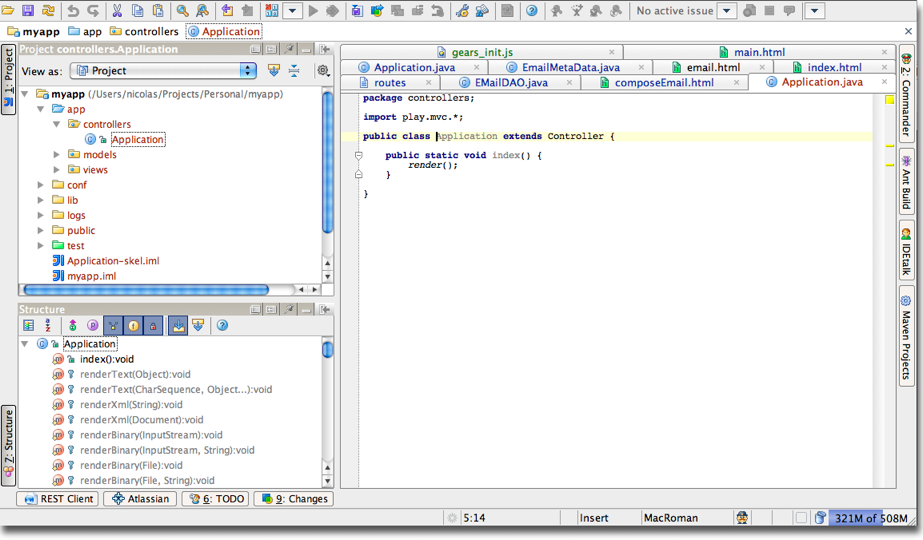

Play 1.0.1 — Release notes
Play 1.0.1 is a maintenance release of the Play 1.0 branch. It fixes a lot of small bugs, provides a better binding for persistent JPA objects, auto-escaping of HTML and JavaScript code in templates to avoid XSS security problems.
Play 1.0.1 is a maintenance release and is fully compatible with the 1.0 version. If you encounter any problems please ask us on the Google Group.
You can read about the fixed bugs on the 1.0.1 road map page. The most important changes are highlighted in this page:
Automatic escaping for HTML code in templates
Now all dynamic expressions are escaped by the template engine to avoid XSS security issues in your application. So the title variable containing <h1>Title</h1> is now escaped:
${title} --> <h1>Title</h1>
If you really want to display it in an unescaped way, you need to explicitely call the raw() method:
${title.raw()} --> <h1>Title</h1>
Also, if you want to display a large part of raw HTML, you can use the #{verbatim /} tag:
#{verbatim}
${title} --> <h1>Title</h1>
#{/verbatim}
Of course, as this feature can break existing applications, it is not enabled by default. You can enable it by adding the following line to your application.conf file:
future.escapeInTemplates=true
This line is added to new applications created with the 1.0.1 release.
@javax.inject.Inject support
You can now use the @Inject annotation if you are using a Dependency Injection container like the one provided by the Spring module. The @Inject annotation automatically injects defined beans in your controllers, jobs and mailer. It works on static fields.
For example to inject a PriceWatcher service defined in Spring to one of your controllers, just do:
public class Application extends Controller {
@Inject
static PriceWatcher prices;
public static void index() {
prices.getAll(); // prices is defined here
}
}
Auto-reload should work as expected.
Better binding for JPA objects
Previously there was no way to automatically bind a JPA object using the HTTP to Java binding. For example:
public static void save(User user) {
user.save(); // fail in 1.0
}
User being a JPA entity class, this code failed because user was a transient object created by the Binder and not yet managed by Hibernate.
The old way was to use the edit() method, like:
public static void save(Long id) {
User user = User.findById(id);
user.edit(params);
user.save(); // ok
}
Now you can provide the user.id field yourself in the HTTP parameters. When Play finds the id field, it loads the matching instance from the database before editing it. The other parameters provided by the HTTP request are then applied. So you can save it directly.
public static void save(User user) {
user.save(); // ok with 1.0.1
}
Of course as this feature can break existing applications it is not enabled by default. You can enable it by adding the following line to your application.conf file:
future.bindJPAObjects=true
This line is added to new applications created with the 1.0.1 release.
Framework ID can be set from the command line
The framework ID allows you to run different configurations for a same Play application (ie dev, test, staging, production, etc…).
Using the command line, you can now specify the application framework ID the application will use. For example, to run an application in production mode:
play run --%production
With these lines defined in the application.conf file:
application.mode=dev
%production.application.mode=prod
It is compatible with all the existing commands using the framework ID information. The default ID is still defined using the play id command.
By the way, play test is then equivalent to:
play run --%test
Custom validation
Can’t find the validator you need in the play.data.validation package? Write your own. You can use the generic @CheckWith annotation to bind your own Check implementation.
For example:
public class User {
@Required
@CheckWith(MyPasswordCheck.class)
public String password;
static class MyPasswordCheck extends Check {
public abstract boolean isSatisfied(Object user, Object password) {
return notMatchPreviousPasswords(password);
}
}
}
Test runner update
We’ve updated Selenium to the 1.0.1 final version and improved the UI. Selenium tests now run in fullscreen. And some new functionality like the “Run all tests” have been added.
Also local documentation is now available when you run your application in test mode.
HTML5 as default doctype and JQuery in new applications
New applications come with a default HTML skeleton. Previously it was a XHTML 1.0 Transitional formatted HTML. Now it comes with a HTML5 doctype by default:
<!DOCTYPE html>
<html>
<head>
<title>#{get 'title' /}</title>
<meta http-equiv="Content-Type" content="text/html; charset=utf-8">
<link rel="stylesheet" type="text/css" media="screen" href="@{'/public/stylesheets/main.css'}">
#{get 'moreStyles' /}
<link rel="shortcut icon" type="image/png" href="@{'/public/images/favicon.png'}">
<script src="@{'/public/javascripts/jquery-1.3.2.min.js'}" type="text/javascript" charset="utf-8"></script>
#{get 'moreScripts' /}
</head>
<body>
#{doLayout /}
</body>
</html>
It’s just the default and you can of course change it to any doctype if you wish. However HTML5 is surely the future and is way simpler.
The default template comes with the JQuery JavaScript library. This is because modern web applications need a good JavaScript framework and we love JQuery. Again it is just the default and you can of course override it with whatever JavaScript library you want.
Oh, and it comes with two default placeholders to inject even more scripts and/or styles. For example, add in your view:
#{set 'moreScripts'}
<script src="@{'/public/javascripts/gears_init.js'}" type="text/javascript">
</script>
#{/set}
And the gear JavaScript library will be accessible in your view.
Improved #{list} tag
The items parameter is now optional and can be replaced by the default arg argument.
So you can rewrite:
#{list items:users, as:'user'}
<li>${user}</li>
#{/list}
as:
#{list users, as:'user'}
<li>${user}</li>
#{/list}
The as parameter is now optional as well. It uses _ as default variable name:
#{list users}
<li>${_}</li>
#{/list}
New #{jsAction /} tag
The #{jsAction /} tag allows to import a server-side defined route as a JavaScript function. It is very useful if you need to call an URL with an AJAX call using free variables.
Let’s see an example:
GET /users/{id} Users.show
Now you can import this route on the client side:
<script type="text/javascript">
var showUserAction = #{jsAction @Users.show(':id')}
var displayUserDetail = function(userId) {
$('#userDetail').load( showUserAction({id: userId}) )
}
</script>
As you see you use the :name syntax to declare free variables. You can mix free and fixed variables together. The #{jsAction /} tag generates a JavaScript function. This function takes a JavaScript object as parameter that must define all the free variables.
New sample application: ‘booking’
The booking application is a port of the well known booking application from the JBoss Seam framework.
It demonstrates how you can manage complex states client side in a RESTful way with a stateless web framework.
Eclipse plug-in is on its way
We are working hard to provide a dedicated Eclipse plug-in. The current status is alpha but already usable. You can find it in the support/eclipse directory of your Play installation.
Support for IntelliJ IDEA
The Play framework now supports IntelliJ IDEA out of the box!
To convert your Play application into an IntelliJ IDEA project, use the idealize command:
# play idealize myApp

You can use the Run and Debug using the context menu.
Next release: Play 1.0.2 release notes